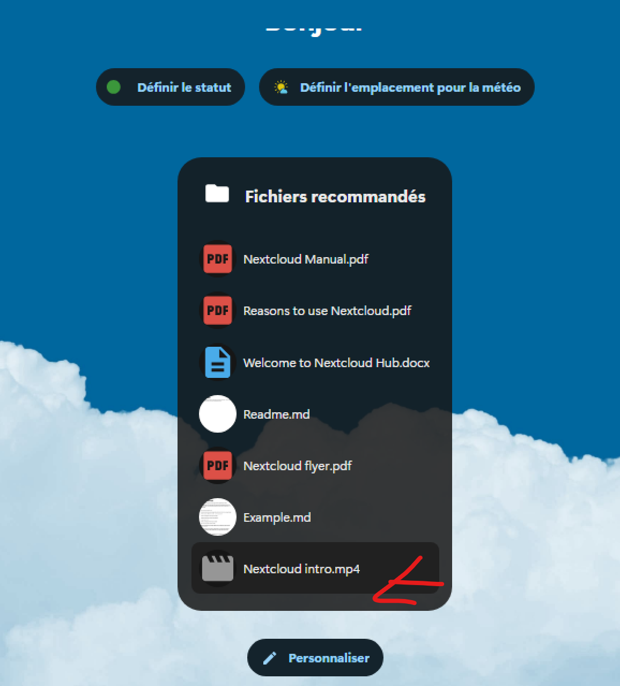

Nextcloud est une solution open source permettant de créer des espaces de stockage de fichiers, à la fois publics et privés. En d'autres termes, il vous offre la possibilité de mettre en place vos propres services de stockage en ligne, similaires à ceux proposés par Dropbox, Google Drive ou Mega.nz. Développé initialement par Frank Karlitschek, également créateur d'Owncloud, Nextcloud a été lancé en 2016 en tant que projet distinct. Depuis, il a beaucoup évolué et ne se limite plus à un simple espace de stockage. Aujourd'hui, Nextcloud est une plateforme polyvalente qui combine la synchronisation de fichiers avec de nombreuses fonctionnalités de collaboration. Grâce à une large gamme de plugins, il permet non seulement de gérer des projets et de tenir des visioconférences, mais aussi d'éditer des documents en groupe, de prendre des notes, de communiquer par messagerie, et bien plus encore. En somme, Nextcloud est devenu un outil complet pour la gestion de contenu et la collaboration en ligne. Ce tutoriel vous guidera à travers l'installation de Nextcloud sur un serveur Debian 12, en utilisant le serveur Web Apache2, le serveur de base de données MariaDB, et PHP 8.2. En outre, vous apprendrez à sécuriser votre installation avec le pare-feu UFW (Uncomplicated Firewall) et les certificats SSL/TLS de Letsencrypt.
Conditions préalables
Pour compléter ce guide, assurez-vous de disposer des éléments suivants : Un serveur Debian 12 avec au moins 4 Go de mémoire et 2 CPU. Un utilisateur non root avec des privilèges d'administrateur. Un nom de domaine pointant vers l’adresse IP du serveur.
Installation du serveur Web Apache2
Installation du serveur web pour l' exécution de nextcloud
Mettez d'abord à jour le systeme
apt update -y
commande pour intaller le serveur web apache
apt -y install apache2
Une fois Apache2 installé, exécutez les commandes systemctl ci-dessous pour vérifier l'état du service Apache2.
systemctl is-enabled apache2
systemctl status apache2
● apache2.service - The Apache HTTP Server
Loaded: loaded (/lib/systemd/system/apache2.service; enabled; preset: en>
Active: active (running) since Wed 2024-07-24 23:37:57 CEST; 17min ago
Docs: https://httpd.apache.org/docs/2.4/
Process: 602 ExecStart=/usr/sbin/apachectl start (code=exited, status=0/S>
Main PID: 631 (apache2)
Tasks: 55 (limit: 4643)
Memory: 21.9M
CPU: 417ms
CGroup: /system.slice/apache2.service
├─631 /usr/sbin/apache2 -k start
├─633 /usr/sbin/apache2 -k start
└─634 /usr/sbin/apache2 -k start
juil. 24 23:37:45 nextcloud systemd[1]: Starting apache2.service - The Apache>
juil. 24 23:37:57 nextcloud apachectl[626]: AH00557: apache2: apr_sockaddr_in>
juil. 24 23:37:57 nextcloud apachectl[626]: AH00558: apache2: Could not relia>
juil. 24 23:37:57 nextcloud systemd[1]: Started apache2.service - The Apache
Une fois Apache2 installé, installer UFW (Uncomplicated Firewall) et ouvrirez les ports pour OpenSSH, HTTP et HTTPS. Vous configurerez UFW comme pare-feu par défaut sur votre serveur Debian.
Installation de UFW
apt install ufw
apt install ufw Lecture des listes de paquets... Fait Construction de l'arbre des dépendances... Fait Lecture des informations d'état... Fait Les paquets supplémentaires suivants seront installés : iptables libip6tc2 libnetfilter-conntrack3 libnfnetlink0 Paquets suggérés : firewalld rsyslog Les NOUVEAUX paquets suivants seront installés : iptables libip6tc2 libnetfilter-conntrack3 libnfnetlink0 ufw 0 mis à jour, 5 nouvellement installés, 0 à enlever et 0 non mis à jour. Il est nécessaire de prendre 603 ko dans les archives. Après cette opération, 3 606 ko d'espace disque supplémentaires seront utilisés. Souhaitez-vous continuer ? [O/n] o Réception de :1 http://deb.debian.org/debian bookworm/main amd64 libip6tc2 amd64 1.8.9-2 [19,4 kB]
Une fois ufw installé, exécutez les commandes ufw ci-dessous pour autoriser le service ssh et activer ufw.
ufw allow OpenSSH ufw enable
root@nextcloud:~# ufw allow OpenSSH Rules updated Rules updated (v6) root@nextcloud:~# ufw enable Command may disrupt existing ssh connections. Proceed with operation (y|n)? y Firewall is active and enabled on system startup root@nextcloud:~#
Exécutez la commande ufw ci-dessous pour obtenir la liste des profils d'application disponibles sur ufw. Vous devriez voir des profils tels que OpenSSH pour le service ssh et WWW Full pour le serveur Web Apache2, les protocoles HTTP et HTTPS.
sudo ufw app list
Exécutez maintenant la commande suivante pour ajouter et activer le profil WWW complet et recharger ufw pour appliquer les modifications.
ufw allow "WWW Full" ufw reload
Enfin, exécutez la commande ufw status ci-dessous pour vérifier les règles activées dans ufw. Assurez-vous que le profil WWW complet est activé, ce qui signifie que les ports HTTP et HTTPS sont ouverts.
root@nextcloud:~# ufw status Status: active To Action From -- ------ ---- OpenSSH ALLOW Anywhere WWW Full ALLOW Anywhere OpenSSH (v6) ALLOW Anywhere (v6) WWW Full (v6) ALLOW Anywhere (v6)
Installing PHP 8.2
La dernière version de Debian 12 Bookwork est livrée avec les paquets PHP 8.2 par défaut, qui est la version PHP recommandée pour l'installation de Nextcloud. Vous allez maintenant installer les paquets PHP 8.2 et configurer PHP pour l'installation de Nextcloud. Vous allez également activer l'Opcache PHP qui sera utilisé comme cache mémoire pour Nextcloud.
Exécutez la commande apt install ci-dessous pour installer les packages PHP sur votre système Debian. La commande installera PHP et certaines extensions nécessaires à Nextcloud, telles que GD, MySQL, Imagick, pear et apcu. Consultez la page des exigences du serveur Nextcloud pour obtenir la liste complète des packages dont vous avez besoin.
apt install -y php php-curl php-cli php-mysql php-gd php-common php-xml php-json php-intl php-pear php-imagick php-dev php-common php-mbstring php-zip php-soap php-bz2 php-bcmath php-gmp php-apcu libmagickcore-dev php-redis php-memcached
Une fois PHP installé, vérifiez la version PHP et les extensions PHP activées à l'aide de la commande ci-dessous.
php --version php -m
Vous devriez voir que PHP 8.2 est installé avec les extensions activées, telles que GD, MySQL, Imagick, xml et zip.
root@nextcloud:~# php --version
PHP 8.2.20 (cli) (built: Jun 17 2024 13:33:14) (NTS)
Copyright (c) The PHP Group
Zend Engine v4.2.20, Copyright (c) Zend Technologies
with Zend OPcache v8.2.20, Copyright (c), by Zend Technologies
root@nextcloud:~# php -m
[PHP Modules]
apcu
bcmath
bz2
calendar
Core
ctype
curl
date
dom
exif
FFI
fileinfo
filter
ftp
gd
gettext
Ensuite, exécutez la commande de l'éditeur nano ci-dessous pour ouvrir le fichier de configuration PHP /etc/php/8.2/apache2/php.ini .
vim /etc/php/8.2/apache2/php.ini
Décommentez le paramètre date.timezone et entrez le fuseau horaire approprié pour PHP.

Augmentez la valeur par défaut des paramètres memory_limit, upload_max_filesize, post_max_size et max_execution_time . Modifiez la valeur selon vos besoins.
memory_limit = 512M upload_max_filesize = 500M post_max_size = 600M max_execution_time = 300
Activez file_uploads et allow_url_fopen en modifiant la valeur par défaut sur On .
file_uploads = On allow_url_fopen = On
Désactivez les paramètres display_errors et output_buffering en modifiant la valeur par défaut sur Off .
display_errors = Off output_buffering = Off
Supprimez le commentaire du paramètre zend_extension et remplacez la valeur par opcache . Cela activera PHP OPcache, qui est nécessaire pour Nextcloud.
zend_extension=opcache
Ajoutez les lignes suivantes à la section [opcache] . La configuration OPCache est recommandée par Nextcloud.
opcache.enable = 1 opcache.interned_strings_buffer = 8 opcache.max_accelerated_files = 10000 opcache.memory_consumption = 128 opcache.save_comments = 1 opcache.revalidate_freq = 1
Enregistrez le fichier et fermez l'éditeur lorsque vous avez terminé.
Enfin, entrez la commande systemctl ci-dessous pour redémarrer le service apache2. Chaque fois que vous apportez des modifications à la configuration PHP, redémarrez le service apache2 pour appliquer les modifications que vous avez apportées.
systemctl restart apache2
Installation du serveur MariaDB
Après avoir installé le serveur Web Apache2 et PHP 8.2, vous installerez le serveur MariaDB qui sera utilisé comme base de données pour Nextcloud et configurerez le mot de passe root MariaDB via l'utilitaire mariadb-secure-installation.
Installez le serveur MariaDB via la commande apt install ci-dessous. Saisissez y lorsque vous o êtes invité et appuyez sur ENTRÉE pour poursuivre l'installation.
apt install mariadb-server
root@nextcloud:~# apt install mariadb-server Lecture des listes de paquets... Fait Construction de l'arbre des dépendances... Fait Lecture des informations d'état... Fait Les paquets supplémentaires suivants seront installés : galera-4 gawk libcgi-fast-perl libcgi-pm-perl libclone-perl libconfig-inifiles-perl libdaxctl1 libdbd-mariadb-perl libdbi-perl libencode-locale-perl libfcgi-bin libfcgi-perl libfcgi0ldbl libhtml-parser-perl libhtml-tagset-perl libhtml-template-perl libhttp-date-perl libhttp-message-perl libio-html-perl liblwp-mediatypes-perl libmariadb3 libncurses6 libndctl6 libpmem1 libregexp-ipv6-perl libsigsegv2 libsnappy1v5 libterm-readkey-perl libtimedate-perl liburi-perl liburing2 mariadb-client mariadb-client-core mariadb-common mariadb-plugin-provider-bzip2 mariadb-plugin-provider-lz4 mariadb-plugin-provider-lzma mariadb-plugin-provider-lzo mariadb-plugin-provider-snappy mariadb-server-core mysql-common pv rsync socat Paquets suggérés : gawk-doc libmldbm-perl libnet-daemon-perl libsql-statement-perl libdata-dump-perl libipc-sharedcache-perl libbusiness-isbn-perl libwww-perl mailx mariadb-test netcat-openbsd doc-base python3-braceexpand Les NOUVEAUX paquets suivants seront installés :
Une fois MariaDB installé, entrez les commandes systemctl suivantes pour vérifier le service mariadb
root@nextcloud:~# systemctl is-enabled mariadb
enabled
root@nextcloud:~# systemctl status mariadb
● mariadb.service - MariaDB 10.11.6 database server
Loaded: loaded (/lib/systemd/system/mariadb.service; enabled; preset: en>
Active: active (running) since Thu 2024-07-25 00:37:28 CEST; 2min 27s ago
Docs: man:mariadbd(8)
https://mariadb.com/kb/en/library/systemd/
Main PID: 18737 (mariadbd)
Status: "Taking your SQL requests now..."
Tasks: 9 (limit: 4643)
Memory: 210.6M
CPU: 1.420s
CGroup: /system.slice/mariadb.service
└─18737 /usr/sbin/mariadbd
juil. 25 00:37:27 nextcloud mariadbd[18737]: 2024-07-25 0:37:27 0 [Note] Inn>
juil. 25 00:37:27 nextcloud mariadbd[18737]: 2024-07-25 0:37:27 0 [Warning] >
juil. 25 00:37:27 nextcloud mariadbd[18737]: 2024-07-25 0:37:27 0 [Note] Inn>
juil. 25 00:37:27 nextcloud mariadbd[18737]: 2024-07-25 0:37:27 0 [Note] Ser>
juil. 25 00:37:27 nextcloud mariadbd[18737]: 2024-07-25 0:37:27 0 [Note] /us
Maintenant que le serveur MariaDB est en cours d'exécution, vous devez sécuriser l'installation de MariaDB, ce qui peut être fait via l' utilitaire mariadb-secure-installation . La commande mariadb-secure-installation vous aide à configurer le mot de passe root et l'authentification MariaDB et vous aide à supprimer le test de base de données par défaut de l'utilisateur anonyme.
Exécutez la commande mariadb-secure-installation pour sécuriser votre serveur MariaDB.
root@nextcloud:~# mariadb-secure-installation
NOTE: RUNNING ALL PARTS OF THIS SCRIPT IS RECOMMENDED FOR ALL MariaDB
SERVERS IN PRODUCTION USE! PLEASE READ EACH STEP CAREFULLY!
In order to log into MariaDB to secure it, we'll need the current
password for the root user. If you've just installed MariaDB, and
haven't set the root password yet, you should just press enter here.
Enter current password for root (enter for none):
OK, successfully used password, moving on...
Setting the root password or using the unix_socket ensures that nobody
can log into the MariaDB root user without the proper authorisation.
You already have your root account protected, so you can safely answer 'n'.
Switch to unix_socket authentication [Y/n] n
... skipping.
You already have your root account protected, so you can safely answer 'n'.
Change the root password? [Y/n] Y
New password:
Re-enter new password:
Password updated successfully!
Reloading privilege tables..
... Success!
By default, a MariaDB installation has an anonymous user, allowing anyone
to log into MariaDB without having to have a user account created for
them. This is intended only for testing, and to make the installation
go a bit smoother. You should remove them before moving into a
production environment.
Remove anonymous users? [Y/n] Y
... Success!
Normally, root should only be allowed to connect from 'localhost'. This
ensures that someone cannot guess at the root password from the network.
Disallow root login remotely? [Y/n] Y
... Success!
By default, MariaDB comes with a database named 'test' that anyone can
access. This is also intended only for testing, and should be removed
before moving into a production environment.
Remove test database and access to it? [Y/n] Y
- Dropping test database...
... Success!
- Removing privileges on test database...
... Success!
Reloading the privilege tables will ensure that all changes made so far
will take effect immediately.
Reload privilege tables now? [Y/n] Y
... Success!
Cleaning up...
All done! If you've completed all of the above steps, your MariaDB
installation should now be secure.
Thanks for using MariaDB!
Création d'une base de données et d'un utilisateur
Après avoir installé le serveur MariaDB, vous allez maintenant créer une nouvelle base de données et un nouvel utilisateur pour Nextcloud. Pour cela, vous devez vous connecter au serveur MariaDB via le client mariadb.
Connectez-vous au serveur MariaDB à l'aide de la commande client mariadb ci-dessous. Saisissez le mot de passe root MariaDB lorsque vous y êtes invité.
mariadb -u root -p
Une fois connecté à MariaDB, exécutez les requêtes suivantes pour créer une nouvelle base de données Mariadb et un utilisateur pour Nextcloud. Dans cet exemple, vous allez créer une nouvelle base de données projetnextcloud_db et l'utilisateur amadouadmnsys avec le mot de passe projet@03 . Assurez-vous de remplacer le mot de passe projet@03 par un nouveau mot de passe.
MariaDB [(none)]> CREATE DATABASE projetnextcloud_db; Query OK, 1 row affected (0,002 sec) MariaDB [(none)]> CREATE USER amadouadmnsys@localhost IDENTIFIED BY 'projet@03'; Query OK, 0 rows affected (0,022 sec) MariaDB [(none)]> GRANT ALL PRIVILEGES ON projetnextcloud_db.* TO amadouadmnsys@localhost; Query OK, 0 rows affected (0,016 sec) MariaDB [(none)]> FLUSH PRIVILEGES; Query OK, 0 rows affected (0,004 sec) MariaDB [(none)]>
Enfin, exécutez la requête suivante pour vous assurer que l'utilisateur amadouadmnsys peut accéder à la base de données projetnextcloud_db .
SHOW GRANTS FOR nextclouduser@localhost;
MariaDB [(none)]> SHOW GRANTS FOR amadouadmnsys@localhost; +----------------------------------------------------------------------------- -----------------------------------------+ | Grants for amadouadmnsys@localhost | +----------------------------------------------------------------------------- -----------------------------------------+ | GRANT USAGE ON *.* TO `amadouadmnsys`@`localhost` IDENTIFIED BY PASSWORD '*C 3EE0EEA999B44826625EF1D5DA36A2C325306DD' | | GRANT ALL PRIVILEGES ON `projetnextcloud_db`.* TO `amadouadmnsys`@`localhost ` | +----------------------------------------------------------------------------- -----------------------------------------+ 2 rows in set (0,000 sec)
Téléchargement du code source de Nextcloud
À ce stade, tous les packages logiciels permettant d'exécuter Nextcloud sont installés. Vous allez maintenant télécharger la dernière version du code source de Nextcloud, puis l'installer. Consultez la page de téléchargement de Nextcloud avant de commencer pour obtenir des informations sur la dernière version de Nextcloud.
Avant de télécharger le code source de Nextcloud, exécutez la commande apt install ci-dessous pour installer curl et décompresser.
apt install curl unzip -y
Accédez au répertoire /var/www et téléchargez le code source de Nextcloud via la commande curl ci-dessous. Visitez la page de téléchargement de Nextcloud pour obtenir la dernière version de Nextcloud.
cd /var/www/html curl -o nextcloud.zip https://download.nextcloud.com/server/releases/latest.zip
Extrayez maintenant le fichier nextcloud.zip via la commande unzip, puis modifiez la propriété du répertoire nextcloud en www-data .
unzip nextcloud.zip sudo chown -R www-data:www-data nextcloud
Avec cela, vous devriez remarquer que le répertoire racine du document pour l'installation de Nextcloud est le répertoire /var/www/html/nextcloud . Et le serveur Web Apache2 peut accéder au code source de nextcloud via l'utilisateur www-data .
Configuration de l'hôte virtuel Apache2
Après avoir téléchargé le code source de Nextcloud, vous devez créer la nouvelle configuration d'hôte virtuel Apache2 qui sera utilisée pour exécuter Nextcloud. Assurez-vous que le nom de domaine pointe vers l'adresse IP de votre serveur Debian pour votre installation Nextcloud.
Créez une nouvelle configuration d'hôte virtuel Apache2 /etc/apache2/sites-available/nextcloud.conf à l'aide de la commande nano ci-dessous.
vim /etc/apache2/sites-available/nextcloud.conf
Modifiez le nom de domaine dans le paramètre ServerName avec votre domaine et le chemin complet du journal pour les paramètres ErrorLog et CustomLog.
Ensuite, exécutez la commande a2ensite ci-dessous pour activer la configuration de l'hôte virtuel nextcloud.conf . Vérifiez ensuite la configuration globale d'Apache2 via la commande apachectl ci-dessous
a2ensite nextcloud.conf apachectl configtest
root@nextcloud:/var/www/html# a2ensite nextcloud.conf Enabling site nextcloud. To activate the new configuration, you need to run: systemctl reload apache2 root@nextcloud:/var/www/html# apachectl configtest AH00557: apache2: apr_sockaddr_info_get() failed for nextcloud AH00558: apache2: Could not reliably determine the server's fully qualified domain name, using 127.0.0.1. Set the 'ServerName' directive globally to suppress this message Syntax OK
Entrez maintenant la commande systemctl suivante pour redémarrer le service apache2 et appliquer la configuration de l’hôte virtuel Nextcloud.
systemctl restart apache2
Après le redémarrage d'Apache2, votre installation Nextcloud devrait être accessible via un protocole HTTP non sécurisé. Accédez à votre nom de domaine Nextcloud et vous devriez obtenir la page d'installation comme celle-ci :
Pour ajouter une couche de sécurité supplémentaire à votre Nextcloud, vous devez configurer HTTPS dans votre configuration d'hôte virtuel Apache2 via Certbot. Certbot est un outil de ligne de commande permettant de générer des certificats SSL/TLS gratuits à partir de Letsencrypt et est fourni avec un plugin supplémentaire qui vous permet de configurer automatiquement HTTPS pour plusieurs serveurs Web.
Exécutez la commande apt install ci-dessous pour installer Certbot et le plug-in Certbot Apache. Saisissez y lorsque vous êtes invité à confirmer, puis appuyez sur ENTRÉE pour continuer.
apt install certbot python3-certbot-apache
Exécutez maintenant la commande certbot ci-dessous pour générer des certificats SSL/TLS pour votre nom de domaine Nextcloud et configurer automatiquement HTTPS dans l'hôte virtuel Apache2. Assurez-vous de modifier le nom de domaine et l'adresse e-mail dans la commande suivante.
certbot --apache --agree-tos --redirect --hsts --staple-ocsp --email amadouadmnsys@illo.ng -d server.illo.ng
Une fois le processus terminé, le nom de domaine Nextcloud doit être configuré avec HTTPS, qui est géré par le plugin Certbot Apache. Et les certificats SSL/TLS se trouvent dans le répertoire /etc/letsencrypt/live/domain-name.com/ .
Installation de Nextcloud
Dans cette section, vous allez démarrer l'installation de Nextcloud à partir de votre navigateur Web. Au cours de ce processus, vous allez également créer l'utilisateur administrateur pour Nextcloud. Lancez votre navigateur Web et accédez au nom de domaine de votre installation Nextcloud (par exemple : http://server.illo.ng/). Vous serez automatiquement redirigé vers une connexion HTTPS sécurisée et il vous sera demandé de créer un utilisateur administrateur pour Nextcloud. Saisissez le nouvel utilisateur administrateur et le nouveau mot de passe de votre Nextcloud. Vous pouvez également configurer un répertoire de données personnalisé ou le laisser par défaut.
Vous avez terminé ! Vous avez terminé l'installation de Nextcloud sur votre système Debian. Vous avez installé Nextcloud avec le serveur Web Apache2, PHP 8.2 et le serveur de base de données MariaDB. Vous avez également sécurisé votre Nextcloud avec UFW (Uncomplicated Firewall) et des certificats SSL/TLS via Certbot et Letsencrypt.
Une fois cette configuration terminée, vous pouvez désormais utiliser Nextcloud pour stocker vos documents en toute sécurité ou ajouter un stockage de données tiers à votre Nextcloud.